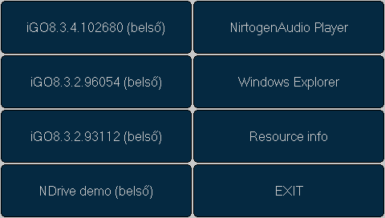
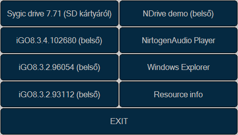

PNAs - gaining more and more popularity these days - have annoyingly limited ability to select and start their navigation software. Most of these equipments designed and manufactured by the Chinese Yuan Feng LTD, thus their firmware is very similar. Unfortunately the manufacturer designed the software of the device to be able to start only one navigation application even if it can do this on a reatively fast and simple way.
Two devices I own (BluePanther Diamond and Wayteq x820) uses almost the same logic when when the user clicks on the "GPS" button:
On x820 it is possible to set the path of the navigation application using the settings page. If the user sets anyhing here, it has absolute priority.
If there no navigation application path has been set (or the device - e.g. BP Diamond - does not support this feature) The device checks if shell.ini exists in the root of the internal flash memory (\ResidentFlash) then in the root of the SD card (\SDMMC). If it finds such a file it launches the application this file points to. If no such a file found, it tries to launch \SDMMC\MobileNavigator\MobileNavigator.exe, then if it still does not exists it tries \ResidentFlash\MobileNavigator\MobileNavigator.exe
Even if we have several way to select which navigation software to start, we have to start the settings menu of the device (on the Waytew x820/x620) if we would like to start a different application than before, or have to edit a file or rename some direcories if the application selector feature is missing (BP Diamond/Zafire)
A PNAMenu használatával viszont megoldható, hogy a készülék "navigáció" funkciójának aktivizálásakor egy rugalmasan, mégis egyszerűen konfigurálható menüből válaszhassuk ki a számunkra az adott pillanatban épp legmegfelelőbb programot.
A PNAMenu induláskor megpróbálja megnyitni a vele egy könyvtárban elhelyezett, vele azonos nevű, csak kiterjesztésében eltérő (.exe helyett .ini) konfigurációs file-t. A gyakorlatban ha a programot a PNAMenu könyvtárba PNAMenu.exe néven másoltuk fel, akkor az ugyan itt található PNAMenu.ini-t fogja feldolgozni mint konfigurációs állományt. Ha azonban kénytelenek vagyunk a programot a MobileNavigator könyvtárba MobileNavigator.exe néven elhelyezni, akkor a konfigurációs állomány neve is MobileNavigator.ini kell legyen szintén a MobileNavigator könyvtárban.
A konfigurációs állomány szerkezete viszonylag egyszerű: minden egyes sor egy másik állományra mutat, és tartalmazhat egy ;-vel kezdődő megjegyzést is. Ha a megadott file kiterjesztése .ini (és a file létezik), a PNAMenu ezt az állományt feldolgozza ezen szabályok szerint mielőtt a következő sorra lépne. Ha a kiterjesztés .exe, (és s file létezik), a menüben egy nyomógomb rendelődik az adott alkalmazáshoz, amit megnyomva a PNAMenu elindítja a programot majd azonnal ki is lép, a lehető legtöbb szabad memóriát biztosítva ezzel az elindított navigációs (vagy egyéb) alkalmazás számára.
Ha egy .exe kiterjesztésű állományt meghatározó sor tartalmaz megjegyzést, a hozzá tartozó nyomógomb felirata ez a megjefgyzés lesz, ha nem tartalmaz, akkor a file elérési útja és neve.
A generált menü 5 indítógombig egy oszlopot tartalmaz, efölött két oszlopba rendezi a program gombokat, hogy azok akár ujjal is könnyen eltalálhatóak legyenek.
A konfigurációs állományok lehetnek ASCII, UTF-8 vagy UCS-16 (Notepad által Unicode-ként aposztrofált) kódolásúak, magyar ő és ű betű viszont csak az utóbbi kettővel menthető el. Ilyen fájlok szerkesztése Windows alatt Notepaddel ajánlot, ez ugyanis biztosan beteszi a file elejére a kódolás automatikus felismeréséhez szükséges karaktereket (UCS16: 0xff 0xfe, UTF8: 0xef 0xbb 0xbf)
A program innen, a forráskód pedig innen tölthető le.
ini file az exe-vel azonos könyvtárban:
\ResidentFlash\iGO8.3.4.102680\iGO8.exe ;iGO8.3.4.102680 (belső) \ResidentFlash\iGO8.3.2.96054\iGO8.exe ;iGO8.3.2.96054 (belső) \ResidentFlash\iGO8.3.2.93112\iGO8.exe ;iGO8.3.2.93112 (belső) \ResidentFlash\NDrive\NDrive.exe ;NDrive demo (belső) \ResidentFlash\Nitrogen\Nitrogen.exe ;NirtogenAudio Player \Windows\Explorer.exe ;Windows Explorer \ResidentFlash\Tools\ResInfo.exe ;Resource info
A fenti kofigurációs állomány (feltéve, hogy a benne megadott összes exe kiterjesztésű állomány létezik) az alábbi menüt eredményezi:
Az újabb eszközök (a BluePanther Diamond és Zafire valamint a Wayteq x820 és x620 egészen biztosan) az SD kárta tartalmát a \SDMMC könyvtár alá csatolja a kártya behelyezésekor. Ha kiegészítjük a fenti konfigurációs fajlt a következőképpen:
\SDMMC\PNAMenu.ini \ResidentFlash\iGO8.3.4.102680\iGO8.exe ;iGO8.3.4.102680 (belső) \ResidentFlash\iGO8.3.2.96054\iGO8.exe ;iGO8.3.2.96054 (belső) \ResidentFlash\iGO8.3.2.93112\iGO8.exe ;iGO8.3.2.93112 (belső) \ResidentFlash\NDrive\NDrive.exe ;NDrive demo (belső) \ResidentFlash\Nitrogen\Nitrogen.exe ;NirtogenAudio Player \Windows\Explorer.exe ;Windows Explorer \ResidentFlash\Tools\ResInfo.exe ;Resource info
Majd az SD kártya gyökerében létrehozzuk a PNAMenu.ini állományt az alábbi tartalommal:
\SDMMC\Drive\WindowsMobile\Drive.exe ;Sygic drive 7.71 (SD kártyáról)
Akkor amennyiben a "Drive\WindowsMobile\Drive.exe" létezik a kártyán, az SD kártya behelyezése után a menü a következőre módosul:
Az SD kártya menüleírójára mutató sor (\SDMMC\PNAMenu.ini) természetesen akkor is benne maradhat a fő konfigurációs állományban, ha az SD kártyát eltávolítjuk, ilyenkor a program egyszerűen figyelmen kívül hagyja a nem létező állományt.
Így amennyiben több SD kártyán különböző navigációs szoftverrel rendelkezünk, elég minden SD kártyánk főkönyvtárában elhelyezni egy PDAMenu.ini állományt a megfelelő tartalommal, és a kártya behelyezésekor az adott program automatikusan be fog kerülni a menübe.
© 2009, Bódy Attila - A program szabadon használható, terjeszthető és módosítható a GPL v3 feltételei szerint. Hibajelentések, nyavajgások, a spambait[pont]hu[kukac]gmail[pont]com címre küldendők